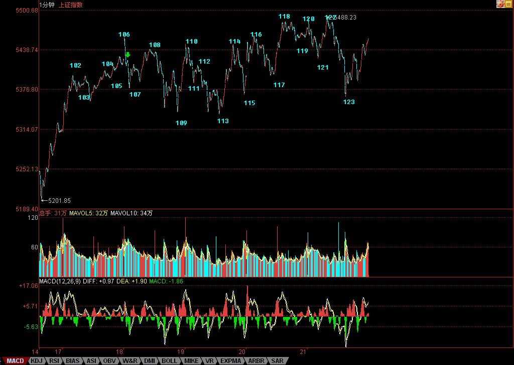

迷踪步舞乱多空头
2007/9/21 16:07:38
看了一下，似乎喜欢红色的多一点，那么本ID就稍微改进一下，不加粗，且放大字号，这样，觉得刺眼的博友可能会舒服点。另外，将重点加粗，这样也清楚点。
在一般人眼里，主力杀人，似乎就如同无聊股评所说的所谓多空之争。但可以明确告诉各位，真正牛的主力，是多空齐杀，让所有人左右挨巴掌。不明白这个道理，股票是白干了。
别人的迷踪步正好成就本ID理论的凌波微步，今天的图形，如教科书般经典，看不明白，真要补课了。
但是，必须明确，目前的形势十分严峻，对于技术不好又迷恋短线的，现在的走势就是典型的绞肉行情。
请记住本ID一句话：在中国，最后的胜利者一定是政策。因为有技术，所以我们可以在刀锋上凌波微步，但是刀锋依然是刀锋。现在的政策信号已经足够频繁，如果如此大力的密集新股发行都不能平息资金的冲动，那么，更严厉的政策一定会出来。
现在，有人说，公募基金牛，有最大的做多冲动，没人管得了。真是典型的幼稚想法，一个基金黑幕就可以打跨他们，难道他们的头不受党纪国法管吗？难道不可以派调查组下去调查调查吗？现在为业绩以及自己的老鼠仓疯狂的所谓公募们，你们连孙悟空都不是，还想逃出掌心？可笑！
所以，刀锋就是刀锋，虽然这个游戏，我们无所畏惧，但一定要有一根弦紧绷着，对政策的动向，1000%地密切关注。而对于一般的投资者，必须要适当控制好仓位，没那技术的，就把均线看好。
下周，关键是能否破本周的顶，如果不行，大盘就会走出小的头肩顶，后面的震荡就会很大。而且，中秋前后，人心浮动，震荡少不了，现在的问题，不是多空的问题，而是不要左右挨巴掌的问题。记住：不多空通杀的，没资格当主力。
对于个股，本ID说的那10几只股票，对于散户来说，如果你作为股票池进行不断的换股操作，你想想你的收益有多少？难道不记得本ID说过在里面资金不断流动的概念？你看看那十几只股票，此起彼伏，有哪天闲着的，用本ID的理论，难道在10几只里找卖点买点都很难？不要这几天000099涨了，才问能不能介入，这是节奏吗？
还有，对股票不要有感情，本ID反复说，散户最大效率的就是不断换股，卖点卖了，一定要等买点，等的时候就去找别的有买点的，如果有时间，你把本ID那10几股票比较一下，感受一下那此起彼伏的节奏，大概你的操作水平就会有更大的提高。
这里的公众场所，本ID的言论必须符合法律的要求。但本ID已经尽量告诉各位节奏了，请问，前几天，本ID在最高位时，不是告诉你小安子的剧本如何如何了吗？其他股票，有了顶分型，而且还跌破5日线，那么不等到底分型出现，你管他干什么？还有人不断问，636怎么样？一个连半年线都没站住的股票，是散户买的吗？大资金可以在里面打架，散户有必要陪着浪费时间吗？等打完了，图形走好了，自然就动了，这样，关注着，但先去操作别的股票，不更节约时间、提高效率吗？
有时候，本ID都为各位着急，为什么这个节奏这么难把握呢？应该很简单的啊。
算了，周末说股票，没劲。
先下，再见。
